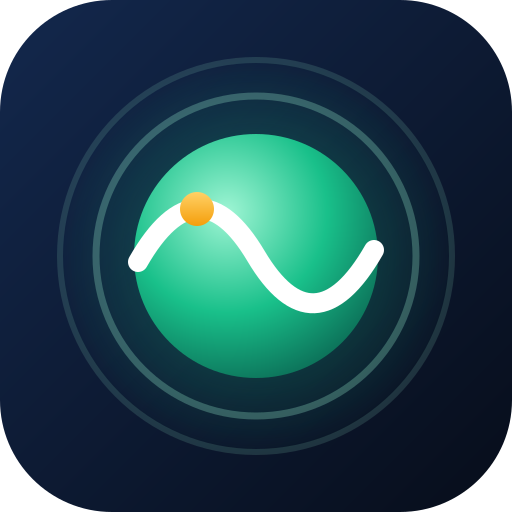
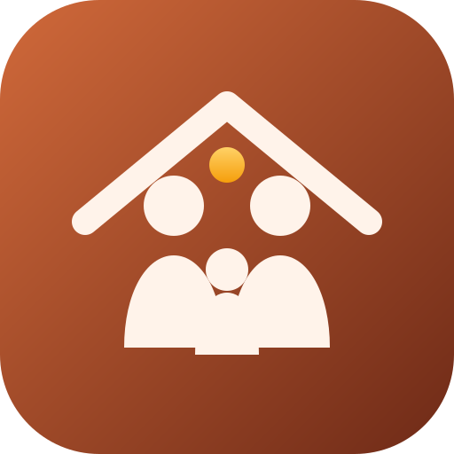

Đo huyết áp tại nhà sao cho đúng
Ngồi nghỉ 5 phút, tay ngang tim, đo 2 lần cách nhau 1 phút.
Sắp ra mắtKiến thức sức khỏe dễ hiểu cho người Việt, bài tập vừa sức, những phút thở và thiền, vài bản nhạc tự sáng tác, và cả những câu chuyện về bầu trời, khoa học, lịch sử cho những giờ rảnh.
Lần đầu ghé thăm?
Thở bằng mũi, để bụng phồng lên khi hít vào. Thấy chóng mặt thì dừng lại và thở bình thường.
Tập đầy đủ với ứng dụng BreathSync →Sáu chuyên mục về sức khỏe, ba góc cho những sở thích làm đầu óc thêm rộng. Mỗi bài viết ngắn, đọc trong vài phút.
Huyết áp, đường huyết, giấc ngủ, đọc hiểu kết quả xét nghiệm cơ bản.
Sắp có 3 bàiSắt, canxi, vitamin D, i-ốt… có trong món Việt nào, ai dễ thiếu.
Bảng tra nhanh bên dướiBài tập 3D có hướng dẫn chi tiết, lộ trình từ 10 phút mỗi ngày.
48 bài trong ứng dụngThở bụng, thở đều 3D, 4–7–8, ngân âm "M": khi nào dùng, làm thế nào cho đúng.
Có ứng dụng BreathSyncNăm phút ngồi yên mỗi sáng. Hẹn giờ có chuông nhẹ.
Hẹn giờ bên dướiNhững bài hát tự sáng tác, nghe để thư giãn, đi bộ, tập thở.
Trên YouTubeTrăng đêm nay, mưa sao băng, dự báo nhật nguyệt thực, tự chế kính thiên văn với ứng dụng Xưởng kính.
Có ứng dụng riêngCơ thể, não bộ, vũ trụ: giải thích bằng ngôn ngữ đời thường.
Sắp cóChuyện y học và đời sống người Việt qua các thời kỳ.
Sắp cóCơ thể chỉ cần một lượng nhỏ, nhưng thiếu kéo dài sẽ ảnh hưởng máu, xương, miễn dịch và trí nhớ. Ăn đa dạng là cách bổ sung an toàn nhất.
| Vi chất | Vai trò chính | Có nhiều trong | Lưu ý |
|---|---|---|---|
| Sắt | Tạo hồng cầu, chở oxy | Thịt bò, gan, các loại đậu, rau xanh đậm | Ăn kèm ổi, cam để hấp thu tốt hơn; tránh uống trà, cà phê ngay trong bữa |
| Canxi | Xương, răng, co cơ | Sữa, sữa chua, đậu phụ, cá nhỏ ăn cả xương, tôm tép | Cần vitamin D để hấp thu |
| Vitamin D | Hấp thu canxi, miễn dịch | Nắng sớm, cá béo, lòng đỏ trứng | Người ít ra ngoài trời dễ thiếu |
| I-ốt | Hoạt động tuyến giáp | Muối i-ốt, rong biển, hải sản | Dùng muối i-ốt nhưng vẫn ăn nhạt |
| Kẽm | Miễn dịch, lành vết thương | Hàu, thịt, hạt bí, các loại đậu | Trẻ đang lớn cần đủ kẽm |
| Vitamin A | Thị lực, da, niêm mạc | Gấc, cà rốt, khoai lang cam, gan, rau xanh đậm | Hấp thu tốt hơn khi nấu cùng chút dầu |
| Folate | Tạo tế bào mới, thai kỳ | Rau lá xanh, các loại đậu | Phụ nữ chuẩn bị mang thai nên hỏi bác sĩ về acid folic |
| Vitamin B12 | Thần kinh, tạo máu | Thịt, cá, trứng, sữa | Hầu như không có trong thực vật – người ăn chay trường cần nguồn bổ sung |
| Magie | Cơ, thần kinh, giấc ngủ | Các loại hạt, ngũ cốc nguyên hạt, rau xanh, chuối | Gạo lứt giữ được nhiều hơn gạo trắng |
| Omega-3 | Tim mạch, não | Cá thu, cá hồi, cá trích, hạt lanh, óc chó | Ăn cá 2 lần mỗi tuần |
Thông tin giáo dục sức khỏe chung. Uống viên bổ sung liều cao khi chưa có chỉ định có thể gây hại – hãy hỏi bác sĩ.
Tổ chức Y tế Thế giới khuyến nghị người trưởng thành vận động cường độ vừa 150–300 phút mỗi tuần, cộng 2 buổi tập sức mạnh. Mười phút đi bộ nhanh cũng được tính.
Ví dụ một tuần 160 phút: 20–40 phút mỗi buổi, nghỉ thứ Tư và Chủ nhật.
Ngồi thẳng lưng, thả lỏng vai, nhắm mắt. Khi tâm trí lang thang, nhẹ nhàng đưa chú ý về hơi thở. Chuông sẽ báo khi hết giờ.

Vòng tròn co giãn dẫn nhịp, nền âm thanh sóng biển dâng lên theo hơi thở, chuông bát báo nhịp và giọng đọc hướng dẫn. Năm kỹ thuật đi từ nền tảng thở bụng đến nấc sâu 4-7-8, tổng hợp từ các bài giảng về hơi thở của BS. Trần Văn Phúc (số 011, 068, 117, 120, 121, 134, 135) và đối chiếu y văn; có hướng dẫn sử dụng chi tiết cho người mới. Miễn phí, tiếng Việt và tiếng Anh, dùng được khi không có mạng.
20 bài chọn từ kênh YouTube của anh Dũng: nghe khi đi bộ, khi tập thở, hay lúc cần một khoảng lặng.
Bấm vào ảnh để phát ngay trên trang. Xem toàn bộ hơn 160 video trên kênh YouTube.
Muốn có một bài hát viết riêng cho mình? Nếu bạn yêu thích những bài hát này và muốn có bài hát dành riêng cho bản thân, gia đình, người thương hay một dịp đặc biệt, hãy mời Dũng một ly cà phê và gửi vài dòng về câu chuyện, cảm xúc, những cái tên bạn muốn có trong bài. Dũng sẽ trao đổi thêm với bạn và cùng viết nên bài hát ấy.
–
Học thiên văn từ con số không, tự thiết kế và chế tạo kính thiên văn, rồi xem đêm nay có gì trên trời. Miễn phí, tiếng Việt, cài lên điện thoại và dùng được khi không có mạng.
Các bài đầu tiên sẽ ra mắt cùng chuyên mục. Đăng ký nhận tin để được báo khi có bài mới, hoặc gửi chủ đề bạn muốn đọc qua email ở cuối trang.
Ngồi nghỉ 5 phút, tay ngang tim, đo 2 lần cách nhau 1 phút.
Sắp ra mắtVì sao người ăn chay trường cần chú ý, và bổ sung thế nào.
Sắp ra mắtCách làm, ai không nên tập, và vì sao thở ra dài giúp thư giãn.
Sắp ra mắtÂm lịch, tuần trăng và mùa thu nhìn từ góc khoa học.
Sắp ra mắtGiấc ngủ giúp ghi nhớ và "dọn dẹp" ra sao.
Sắp ra mắtDanh y thời Trần và tinh thần dùng thuốc nam.
Sắp ra mắtMở thẳng trên trình duyệt, không cần đăng ký tài khoản. Có thể "cài" lên màn hình điện thoại như một ứng dụng thật và dùng cả khi không có mạng.
Huấn luyện viên bỏ túi: lộ trình từ thói quen nhỏ, 48 bài tập minh họa 3D, thực đơn món Việt, ăn chay theo âm lịch, báo cáo tuần – tháng – năm. Miễn phí, dùng được khi không có mạng, tiếng Việt và tiếng Anh.
Học thiên văn, tự chế kính thiên văn, bầu trời đêm nay, dự báo nhật nguyệt thực và nhật ký quan sát. Miễn phí, tiếng Việt, dùng được khi không có mạng.
Tập thở chậm cùng vòng tròn, âm thanh thiền, chuông bát và rung theo nhịp: thở bụng cơ hoành, thở đều 3D, 4-4-8, 4-7-8 trước khi ngủ, ngân âm "M". Có hướng dẫn sử dụng cho người mới. Miễn phí, tiếng Việt và tiếng Anh, dùng được khi không có mạng.

Lập cây gia phả cho cả nhà: thêm từng người hoặc nạp danh sách Excel kèm ảnh, chọn "tôi" để biết gọi từng người là gì cho đúng vai vế, nhớ ngày giỗ theo âm lịch, văn khấn mẫu, in gia phả khổ A0–A3 treo tường. Dùng được cho nhóm bạn, lớp học, phòng ban. Dữ liệu nằm trên máy của bạn (và Google Drive của bạn nếu muốn chia sẻ). Miễn phí, tiếng Việt và tiếng Anh, dùng được khi không có mạng.
📲 Muốn mở bằng một chạm như ứng dụng thật? Xem cách cài lên điện thoại – mất chưa tới 1 phút.
Các ứng dụng của trang cài thẳng từ trình duyệt: không cần CH Play hay App Store, không cần tài khoản, miễn phí. Cài xong có biểu tượng riêng, mở toàn màn hình và dùng được cả khi mất mạng.
Bước 1 – mở ứng dụng muốn cài:
Bước 2 – làm theo máy của bạn:
Để lại email, mình sẽ gửi một lá thư ngắn khoảng 2–4 tuần một lần:
Bài viết sức khỏe, khoa học, lịch sử mới ra
Bài hát mới trên kênh YouTube
Ứng dụng mới và tính năng mới (như bản mới của Tôi & Gia Đình)
Hiện tượng thiên văn đáng xem sắp tới
Khung đăng ký đang được mở. Trong lúc chờ, bạn có thể gửi email với tiêu đề "Đăng ký nhận tin", mình sẽ thêm bạn vào danh sách.
✉️ Gửi email đăng kýBạn sẽ nhận một thư xác nhận – bấm vào đường link trong thư là hoàn tất. Email chỉ dùng để gửi bản tin này, không chia sẻ cho ai. Mỗi thư đều có nút Hủy đăng ký, bấm một lần là xong.
Xin chào, mình là Nguyễn Đức Dũng. Mình là người yêu thích khoa học, mê du lịch, thích gần gũi thiên nhiên và không thể sống thiếu âm nhạc. Bên cạnh đó, mình dành nhiều thời gian tìm hiểu về sức khoẻ – dinh dưỡng, vận động, hơi thở, giấc ngủ – cùng nhiều lĩnh vực khác như thiên văn, lịch sử, công nghệ.
HLV Sức Khỏe ra đời từ mong muốn đơn giản: những gì mình học được, ghi chép được, viết thành bài hát hay làm thành ứng dụng thì chia sẻ lại để mọi người cùng dùng – miễn phí, dễ hiểu và gần gũi với người Việt.
Nếu bạn thấy các thông tin và ứng dụng trên trang hữu ích, hãy mời người phát triển một ly cà phê. Mỗi ly cà phê là thêm động lực để mình tiếp tục duy trì và phát triển trang.
Các ứng dụng: HLV Sức Khỏe · BreathSync · Xưởng kính thiên văn · Tôi & Gia Đình · Kênh YouTube · Liên hệ: nddzungx@gmail.com
Ủng hộ tuỳ tâm, hoàn toàn tự nguyện – trang và các ứng dụng vẫn miễn phí đầy đủ. Xin chân thành cảm ơn!
NGUYEN DUC DUNG
BIDV · 3210256468
Mở ứng dụng ngân hàng → Quét QR (hoặc chụp màn hình rồi chọn ảnh QR).
PayPal → Gửi tiền → nhập email: ndd.phateco@gmail.com